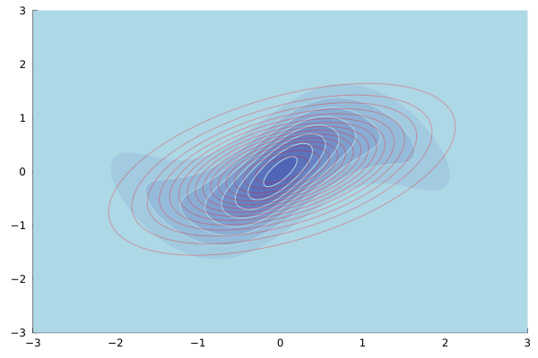

What's this package for?
This package implements a particular type of approximate Bayesian inference: it approximates a posterior distribution with a full-covariance Gaussian distribution[1].
Basic use
Currently, the main function of interest this package exposes is VI. At the very minimum, the user needs to provide a function that codes the (unnormalised) log-posterior function.
Let's consider the following toy example:
using ApproximateVI
logp = exampleproblem1() # target log-posterior to approximate
x₀ = randn(2) # random initial mean for approximating Gaussian
q, logev = VI(logp, randn(2), S = 100, iterations = 10_000, show_every = 50)
# Plot target posterior, not log-posterior!
using Plots # must be indepedently installed.
x = -3:0.02:3
contour(x, x, map(x -> exp(logp(collect(x))), Iterators.product(x, x))', fill=true, c=:blues)
# Plot Gaussian approximation on top using red colour
contour!(x, x, map(x -> pdf(q,(collect(x))), Iterators.product(x, x))', color="red", alpha=0.2)A plot similar to the one below should appear. The filled blue contours correspond to the distribution being approximated, here the exponentiated logp, and the red contours correspond to the produced Gaussian approximation q.

Options S above specifies the number of samples to use in order to approximate the ELBO (see Technical background), i.e. the objective that which maximised produces the best Gaussian approximation. The higher the value of S is set, the better the approximation of the ELBO, however, at a higher computational cost. The lower the value of S is set, the faster the method, but the poorer the approximation of the ELBO. Options iterations specifies the number of iterations that the internal optimiser is run when maximising the ELBO. Option show_every specifies how often the progress of the ELBO maximisation should be reported.